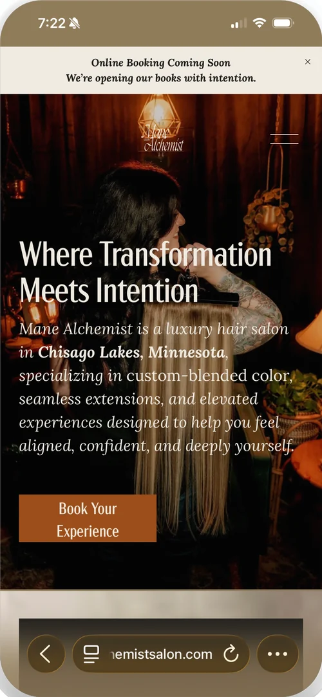
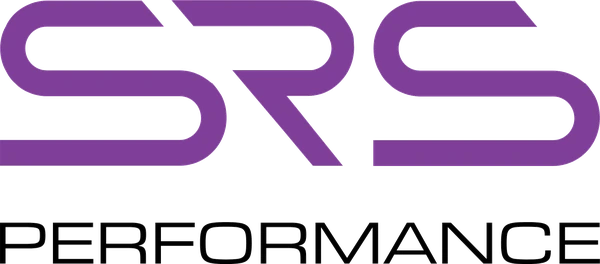
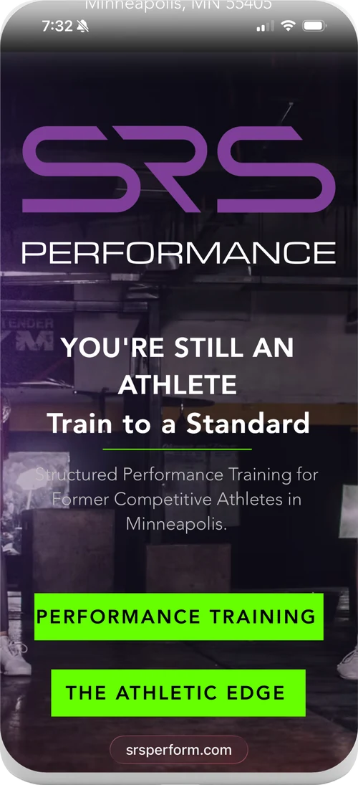
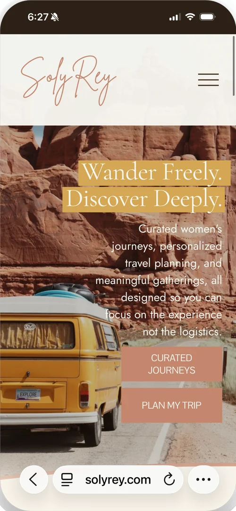

Mane Alchemist
Salon · Chisago Lakes MN
Positioned away from the wellness salon default and toward deliberate luxury.
Everything visual followed that one call. Started with a Sounding.

That is not a compliment. It is a structure, and it is the reason you cannot step away from your own business for a week without something breaking. The Build is the work of getting it out of your head and into a shape that runs without you standing in the middle of it.
Brand. Operations. Business development. Every price on this page is published. You will not need a call to see one.
Where this usually starts
The revenue is fine. The clients are happy. The work is good enough that no one has any reason to question the arrangement. And you are the single point of failure in every part of it, which means growth costs you more than it returns.
Most people in this position do not need encouragement. They need someone to look at the whole thing at once and say plainly what is load bearing and what is not.
What it covers
What you are, said in a way that a stranger can repeat correctly. Positioning, message, and the language you use everywhere else.
How the work actually moves. Intake, delivery, handoff, and the parts currently held together by you remembering to do them.
Where the next client comes from, on purpose rather than by referral luck. Offer structure, pricing, and the path someone takes to reach you.
Work
None of these look like each other, and none of them look like me. That is the point. The positioning came first and the identity followed from it.

Mane Alchemist
Salon · Chisago Lakes MN
Everything visual followed that one call. Started with a Sounding.


SRS Performance
Training · Minneapolis MN
The audience decision set the entire register. Started with a Sounding.

SolyRey
Travel
That is what the whole brand now says. Started with a Sounding.
Phase zero
Flat$300
One conversation about the whole business. You do not need to come prepared. Ninety minutes is the length, not an estimate, because a conversation with no end does not produce a decision. Afterward you get a written page: what I heard, what is load bearing, and what I would do first. It is yours whether or not we work together again.
Every client on this page started here. Some stopped here, and that was the right answer for them.
What happens after that
One day
Flat$1,500
You know what you are building. You need the positioning, the message, and the language settled so you can go build it.
A season
Starting at$6,000
The gap is not in the words. It is in what happens after the words, and that takes longer than a day.
Every engagement is tailored. Some start as a single day and grow into something much bigger. We figure out the right scope together, and it is written down before either of us commits to it.
Production, sold on its own
Starting at$4,000
Built in code. Not a template, not a theme, not a page builder, and not a platform subscription you keep paying to rent. It is written for your business and it belongs to you.
Because it is coded rather than assembled, changes come through me. That is the trade. Nothing is limited to what a theme allows, and nothing breaks because a plugin updated overnight.
From$95per month
A live site needs upkeep for as long as it is live. Every site I build is on one of these.
Per quarter$3,600
A defined quarter with a defined output. Strategy, calendar, and the writing itself.
One contract
Foundation, identity, website, content strategy, and the plan for putting it in front of people. One scope, built in sequence.
What I do not do
Questions people ask
A Sounding is $300. The Build is $1,500 for a single day and starts at $6,000 for a season. A website starts at $4,000, content is $3,600 per quarter, and a full engagement covering all of it starts at $15,000. Every figure is published on this page.
No. Every number is on this page. The conversation is for deciding what you actually need, not for finding out what it costs.
No. You do not need documents, a deck, or a list of questions. Come as you are and talk. Structuring it is my job.
No. Identity is only available inside the full engagement, because a logo made before the positioning is settled has to be remade after.
Yes. Essential care is $95 per month and covers hosting, security, backups, and regular health checks. Complete is $200 per month and adds up to an hour of content updates. Design work beyond that is $100 per hour. Every site I build is on one of the two.
No, and that is deliberate. The site is written in code rather than assembled from a template, so it is not limited by what a theme allows and it does not break when a plugin updates. Content changes come through me, which is what the Complete tier covers.
A season, scoped in a written proposal before either of us commits. The exact length depends on how much of the operations work is in play.
Yes. I am based in Forest Lake, Minnesota and work in person around the Twin Cities and Minneapolis. Everything on this page also runs remotely, and most engagements do.
Fourteen years in corporate marketing before this practice. That is where the diagnostic comes from: I have seen the inside of enough businesses to recognise the pattern quickly.
No. This is brand and business development consulting, drawn from fourteen years in corporate marketing. You get a diagnosis and a plan, not a series of open-ended questions.
You already know what is not working.
Ninety minutes, and a page you keep.
Based in Forest Lake, Minnesota. In person around the Twin Cities, remote everywhere else.
Looking for the retreats instead? The retreats are a small group format, capped at fifteen. They book directly, no Sounding required.